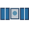
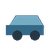
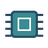

Model uydu |
Mekanik |
Elektronik | Yazılım | Projelerim ve hedeflerim | Uzay haberleri | Üye kaydıBir yıl boyunca neler yaptığımı ve neleri öğrenmek istediğimi burada takip edeceğim.
| Alan | Proje / çalışma | Hedef |
|---|---|---|
| Uzay | Model uydu deneyimi | Edindiğim tecrübeyi yeni projelerde kullanmak |
| Mekanik | SolidWorks | Kendi modellerimi oluşturmak |
| Üretim | Bambu Lab | Baskıya uygun parça üretmek |
| Elektronik | Devre 1 | Devreleri daha iyi analiz etmek |
| Yazılım | MTA | Gerçek bir kod tabanında daha fazla deneyim kazanmak |
SpaceLog | Uzay, teknoloji ve mühendislik yolculuğum